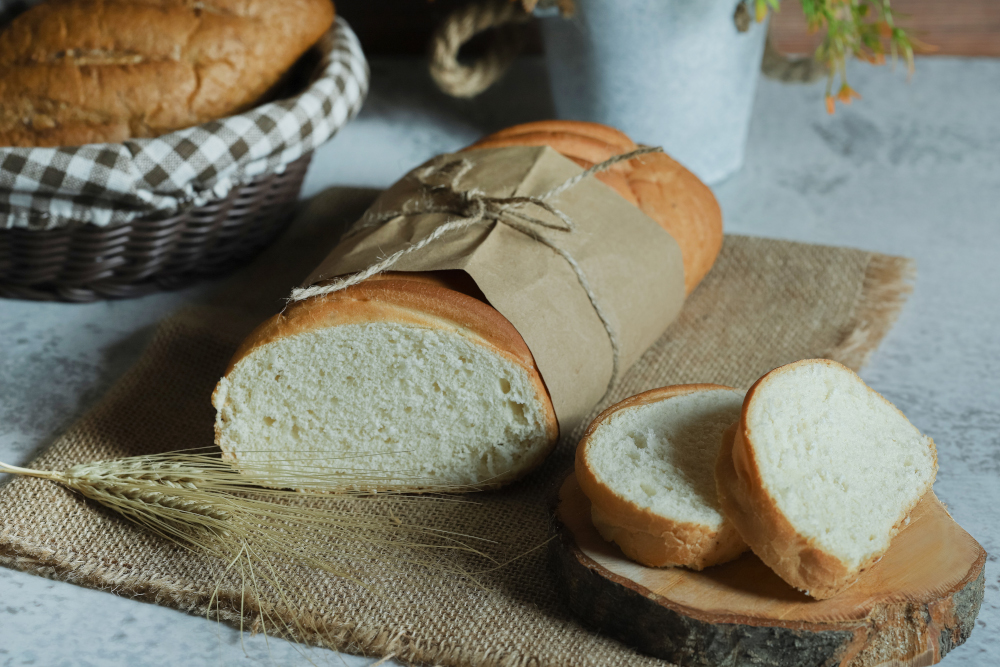

Receitas De Pães
Pão de forma Caseiro
O Pão de Forma Caseiro é uma receita fácil, rápida, com poucos ingredientes e que pode ser feita em qualquer forno doméstico.

- Rendimento: 1 pão médio de 1kg
- Tempo de manuseio: 40 minutos
- Tempo total de preparo: 3 a 4 horas
Ingredientes
Esponja
- 113 g (3/4 xícara) de farinha de trigo
- 113 g (1/2 xícara) de água
- 6 g (1/2 colher de sopa) de fermento biológico seco instantâneo
- Ou, se quiser utilizar fermento natural, são: 232 g de fermento natural de farinha branca. O fermento deve estar "refrescado" e não pode ser usado direto da geladeira.
Massa Final
- 452 g (3 1/2 xícara) de farinha de trigo
- 254 g (1 xícara) de leite integral (se quiser usar leite em pó, acesse a planilha)
- 45 g (6 colheres de sopa) de açúcar
- 11 g (1/2 colher de sopa) de sal
- 5 g (3 colheres de sopa) de manteiga sem sal
- 232 g de pré-fermento
Utensílios
- Forma para pão (24x10x6,5cm)
- Balança de precisão e outros utensílios básicos para fazer pão caseiro.
Modo de preparo
- Faça uma esponja, que é um tipo de pré-fermento. Em uma tigela grande, adicione 113 gramas de farinha de trigo e o fermento biológico seco. Adicione também a água e misture bem, até incorporar todos os ingredientes.
- Cubra e deixe descansar por 30 minutos.
- Misture e sove tudo na mão, Se estiver usando uma batedeira planetária misture os ingredientes em velocidade baixa por 5 minutos e mais 10 minutos em velocidade média.
- Misture todos os ingredientes sólidos: farinha de trigo, açúcar e sal.
- Adicione os ingredientes sólidos na tigela onde fizemos a esponja.
- Adicione a manteiga sem sal, amolecida em ponto de pomada, e o leite integral.
- Comece misturando com uma colher, fazendo um movimento circular no meio da tigela. Quando a massa começar a ficar mais firme, use as mãos.
- Faça isso por uns 5 minutos, até a massa descolar da tigela. Então transferimos para a bancada, mas antes de começar a sovar, cubra e aguarde de 5 a 10 minutos.
- Após o descanso, sove a massa por aproximadamente 10 minutos.
- Modele uma bola e coloque ela para descansar de volta na tigela. Esta será a primeira fermentação e deve durar aproximadamente uma hora.
- Unte a forma de pão. Eu usei manteiga, mas também pode ser feito com óleo.
- Modele a massa, coloque na forma, cubra e deixe descansar por 45 minutos. Já pode também ligar o forno em 180ºC, pois é necessário no mínimo 30 minutos de pré-aquecimento.
- Depois de 45 minutos de descanso, a nossa massa está pronta para entrar no forno. Ela vai assar por aproximadamente 45 minutos a uma temperatura de 180ºC.
- Deixe esfriar por 30 a 60 minutos antes de cortar.